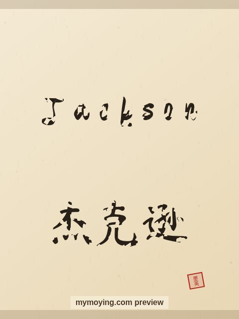

Jackson in Chinese Calligraphy
Curious how Jackson looks in Chinese brush calligraphy? This page shows the name, its Chinese transliteration 杰克逊 (Jié kè xùn), and the story behind it.

Sample. “Jackson” in the Regular (楷书) brush style with the Chinese name 杰克逊 (Jié kè xùn). The paid file removes the watermark.
The Chinese characters for Jackson
As a transliteration, Jackson is usually written 杰克逊 (Jié kè xùn). Each character is listed below with its own dictionary meaning — the name is chosen by sound, not by meaning, and Moying does not translate names. Please have a person review the characters before any permanent use such as a tattoo.
Origin and meaning
With English origins, Jackson is usually read as “son of Jack”.
About the name Jackson
A surname of Andrew Jackson, the seventh US president.
As a gift or a tattoo
The name Jackson suits a framed gift, and the clean high-resolution file also works as a tattoo design.
Open Jackson in the generatorFree watermarked preview. $1.99 once for a clean high-resolution download of this name in every style and setting. No subscription. Digital product, delivered instantly; see Terms.